<!DOCTYPE html>
<html lang="en">
<head>
  <link href="styles/main.css" rel="stylesheet" type="text/css">
  <meta charset="UTF-8">
  <meta name="viewport" content="width=device-width, initial-scale=1.0">
  <title>Document</title>
</head>
<body class="space">
  <!--  -->
  <script src="https://cdnjs.cloudflare.com/ajax/libs/three.js/110/three.min.js"></script>
  <script>
    // Set up scene
    let scene, camera, renderer;
    let starGeo, stars; // Add the "let" keyword

    function init() {
      scene = new THREE.Scene();
      camera = new THREE.PerspectiveCamera(60, window.innerWidth / window.innerHeight, 1, 1000);
      camera.position.z = 1;
      camera.rotation.x = Math.PI / 2;

      renderer = new THREE.WebGLRenderer();
      renderer.setSize(window.innerWidth, window.innerHeight);
      document.body.appendChild(renderer.domElement);

      starGeo = new THREE.Geometry();
      for (let i = 0; i < 6000; i++) {
        star = new THREE.Vector3(
          Math.random() * 600 - 300,
          Math.random() * 600 - 300,
          Math.random() * 600 - 300
        );
        starGeo.vertices.push(star);
      }
      let imgPath = __dirname + "/img/stars.png";
      let sprite = new THREE.TextureLoader().load(imgPath);
      let starMaterial = new THREE.PointsMaterial({
        color: 0xaaaaaa,
        size: 0.7,
        map: sprite
      });

      stars = new THREE.Points(starGeo, starMaterial);
      scene.add(stars);
      animate();
    }

    // Render Loop
    function animate() {
      renderer.render(scene, camera);
      requestAnimationFrame(animate);
    }

    init();
  </script>
</body>
</html>
